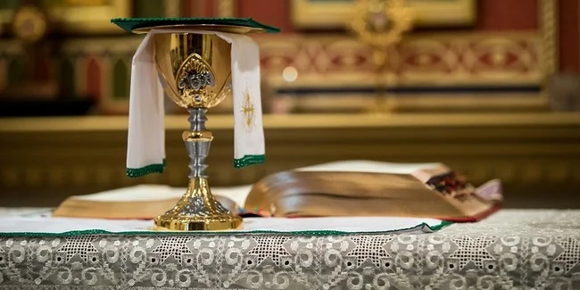
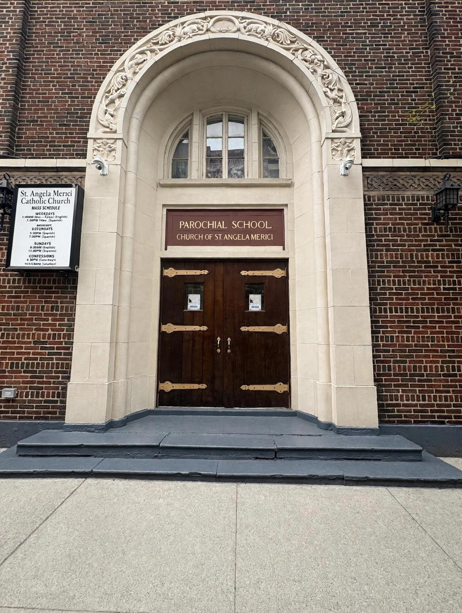
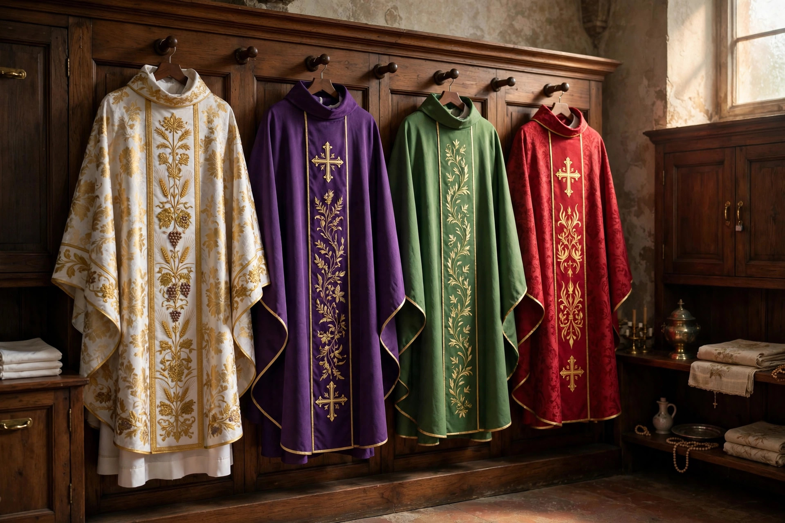

Latest News from the Vatican
Stay connected with the global Catholic Church. Read official news from Vatican News.
Photo Gallery
Moments from our parish life.



Gospel & Thought for the Day
Nourish your spirit with today’s Gospel reading and reflection.
Mass Times
Saturday
7:00 AM — Bilingual
5:30 PM — English
7:30 PM — Spanish
Sunday
8:00 AM — Spanish
9:30 AM — English
11:00 AM — Spanish
Weekdays
Mon–Fri: 1:00 PM — Bilingual
Thursday: 7:30 PM — Bilingual
Upcoming Parish Events
Join us in prayer, fellowship, and community life.
Sunday Fellowship
Every Sunday after the 11:00 AM Mass
Parish Hall
Youth Group Meeting
Fridays • 6:00 PM
Lower Church
Bible Study
Wednesdays • 7:00 PM
Rectory Meeting Room
Confession Times
Saturday: 4:00 PM – 5:00 PM
Or by appointment
Our History
Founded in 1899, St. Angela Merici Catholic Church has faithfully served the people of the Bronx for more than a century. Through changing times, our parish has remained a place of prayer, worship, and service, welcoming generations of families to encounter Christ through the Eucharist, the Sacraments, and the life of the Church.
St. Angela Merici
St. Angela Merici (1474–1540) was an Italian educator, mystic, and the foundress of the Company of St. Ursula, dedicated to the Christian education and formation of young women. Guided by deep faith, wisdom, and charity, she believed that education rooted in the Gospel could transform both individuals and society. Her example continues to inspire our parish.
Contact Us
St. Angela Merici Catholic Church917 Morris Avenue, Bronx, NY
(718) 293-0984
saintangelamerici@yahoo.com